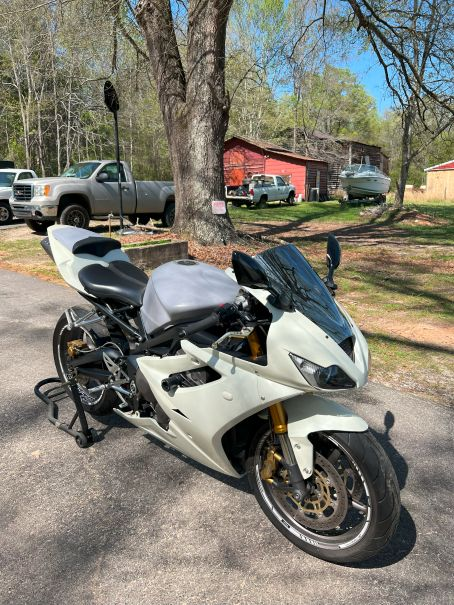

My Love for Motorcycles
You are probably wondering why I have this page, well it is because I love motorcycles. They are my biggest and sadly most expensive hobby. The page will go over all sorts of things regarding my bikes. It will showcase the bikes themselves, my skills, and so much more. I hope that you enjoy my hobby and my motorcycles!
I love working on motorcycles as well as riding them around. That is a big part of the hobby. I do my best to do all of the work on the bikes myself. On my Ducati monster specifically I have rebuilt the clutch, changed the oil and oil filter, done a coolant flush, added frame sliders and more!

About me
My name is Sadik Karout I am currently studying at UNCC, but that isn't why you're here. I got into motorcycles with two of my good friends, Hunter and Josh. We have all been riding and working on bikes together now for about 3-4 years.
I have known Josh and Hunter for years now. We all grew up and worked at a summer camp together for a few years. They have been close friends of mine ever since, and owning the bikes with them has been has only brought us closer! Pictured above was actually our first ever ride together, we went and got Mexican food.
When it really started
I got my first motorcycle in late 2021 when I was 21 years old. Within 6 months I had owned 5 total bikes. My two friends Josh and Hunter actually both got bikes before me, and this is what prompted me to jump in to the world of bikes!

This Virago actually gave me many problems. I enjoyed working on the bike at first, but the issue was find parts for a bike that old that also fit correctly was nearly impossible. So shortly after I bought this bike, I bought my second bike, a 2002 Kawasaki Vulcan 1500. I desperatley wanted a working running bike.

How I make it work
Something that you may be asking yourself is "wow this seems like a pretty exspensive hobby," and you would be correct. But the bikes don't tend to be the most exspensive part, because with few exceptions I have actually resold all of my bikes for more than I payed, breaking even or even making a profit. The most exspensive part tends to be gear: helmest, gloves, pants, boots, headsets and so on. These aren't really re-sellable items. Not for a lot of money atleast.
| Bike | Original Cost | Selling Price | Profit (negative or positive) |
|---|---|---|---|
| Yamaha Virago |
$750 | $350 | -$400 |
| Kawasaki Vulcan 1500 |
$3,000 | Traded away for a Ducati 749 | -$3,000 |
Ducati 749 |
Vulcan | $5,800 | $5,800 |
| Yamaha FZ6 | $3,000 | $4,000 | $1,000 |
| Triumph Daytona 675 | $3,500 | $4,200 | $700 |
| Totals | 10,250 | $14,350 | $4,100 |
Funny enough I double checked my math on this numerous times because I thought that there was no way I had such a a high profit on my bikes. I do not want this to convince you that bikes are cheap. This is not the normal case at all. Most people I know do not tend to sell their bikes for more than they bought them, especially if they're new.
Why I got into mototcycles
Ever since I was a kid I have loved motorcycles. I always stared at them on the roads and imagined that I was on one very time I rode my bike around my neighborhood I always knew that one day I would own a motorcycle, but never had I imagined t0hat I would own 7 (not all at once). It wasn't bigger Harley-type bikes that I wanted, but rather sport bikes that I loved.
Once I got my FZ6 I immediatley fell in love and knew that I was done with big heavy cruisers like my Vulcan. Following my FZ6 I scoured Facebook Marketplace constantly for new sports bikes that I could get. I always dreamed of owning sports bikes and so called "crotch rockets" this is why I stuck with bikes for so long. My next sports bikes were my monster S4R and then my first Super sport, a Ducati 749.
Having both of these bikes was awesome because I had wanted a Ducati since I was a kid. So owning two was a dream come true!
Where I usually ride
I tend to ride up in the Hickory/Claremont area of North Carolina, about an hour north of Charlotte. This is where both of my buddies Josh and Hunter both live, and where we all keep our bikes.

In the picture above, Josh and I took our bikes up to Brown Mountain Overlook, about an hour and a half from where we kept our bikes in Claremont NC. We also had taken our bikes up to Asheville NC quite a few times as well.
I have also taken a long road trip on my FZ6 a few months later. I road my bike from NC all the way down to ST Augustine Florida for spring break. This was about an 8 hour ride. Taking me closer to 10 hours each way because you stop far more often on motorcycles. I wouldn't recommend doing this!

AI Prompts That I Used
| My Prompt | Input Code | AI Code Given | Result |
|---|---|---|---|
|
I am using HTML to create a website and need to hide the sections that are not currently being visited. This is what I have: section:where(:not(:first-child)) { display: none; } section:target { display: block; } |
section:where(:not(:first-child)) { display: none; } section:target { display: block; } |
section:not(:first-of-type) { display: none; } section:target { display: block; } body:has(section:target) section:first-of-type { display: none; } |
Code did not work |
| this hides my first section the entire time, i need it to still be visible | Previously output code |
section:not(:first-of-type) { display: none; } section:target { display: block; } section:first-of-type:has(~ section:target) { display: none; } |
My Final Code |